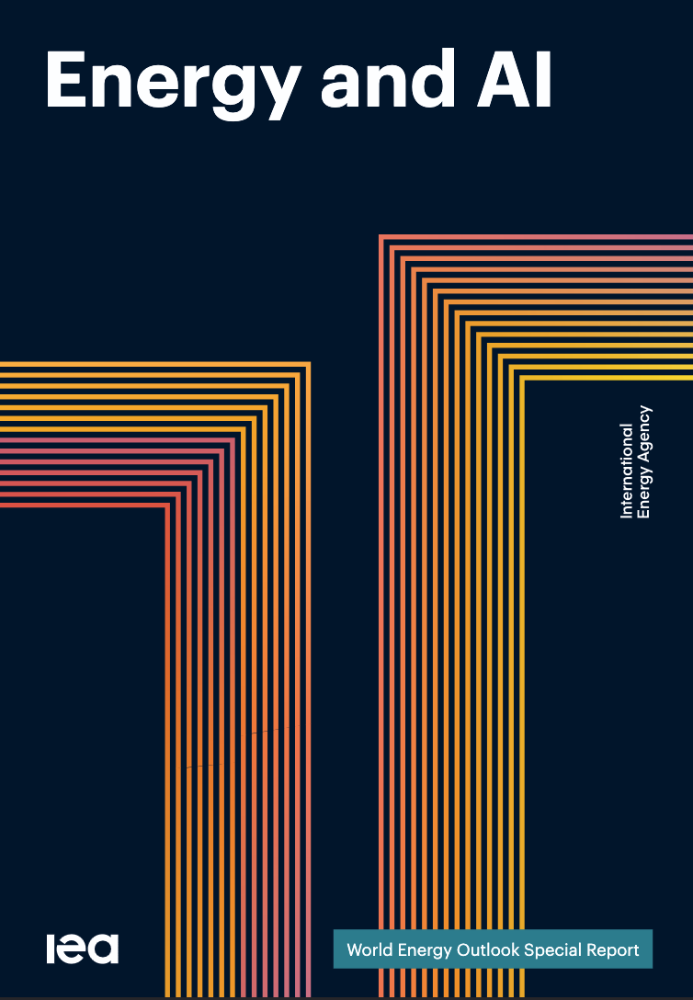

|

[PDF]
·
[IEA]
|
Authors
Thomas Spencer,
Siddharth Singh
Directed by Laura Cozzi (Director, Sustainability, Technology and Outlooks). Published by the International Energy Agency.
Abstract
Following the IEA's landmark Energy and AI report (2025), this follow-up examines how the energy–AI nexus has evolved amid surging investment in data centres and rapid advances in model capabilities. Drawing on fresh datasets and analysis, it explores where electricity demand is rising, how quickly grids and supply chains can respond, and what these shifts mean for en |